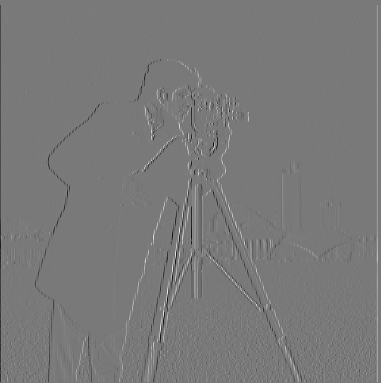
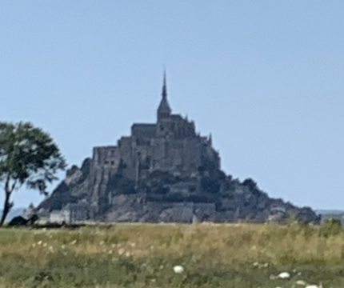
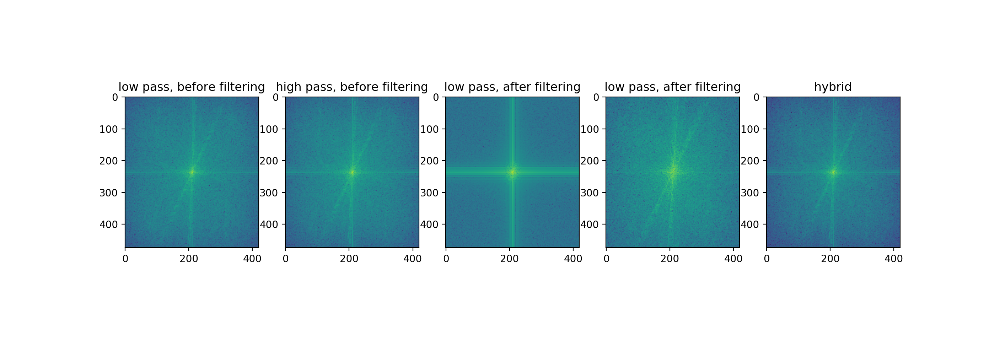
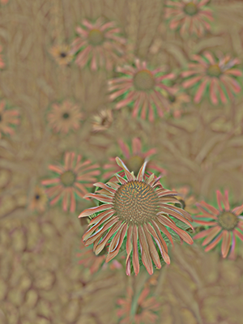

$D_x$

$D_y$

Gradient magnitude
Binarized (>0.22)
Here, we attempt to detect edges by using the gradient magnitude of the image. We estimate the gradient magnitude by computing partial derivatives with the finite difference filters in a convolution: $$D_x = \begin{bmatrix} 1 & -1 \end{bmatrix} D_y = \begin{bmatrix} 1 \\ -1 \end{bmatrix}$$ Then, we calculate gradient magnitude by $g = \sqrt{d_x^2 + d_y^2}$ for every pixel.
|  $D_x$ |
$D_y$ |
Gradient magnitude |
Binarized (>0.22) |
We first blur the image with a Gaussian kernel, then perform finite difference operator.
 $D_x$ |
$D_y$ |
 Gradient magnitude |
 Binarized |
We see that the edges are a lot clearer now, because by removing high frequencies we lessen the likelihood of mistaking small details as edges.
We can also convolve the Gaussian and finite difference filters together and perform only one convolution.
 $D_x$ |
$D_y$ |
 Gradient magnitude |
 Binarized |
We can see the result is the same as doing it with two.
We attempted to straighten images by computing the orientation of the gradient for pixels that we classify as edges, then we try to rotate image at angles between $-30^\circ$ and $30^\circ$ that the maximum number of angles are either horizontal ($0^\circ$) or vertical $(90^\circ)$.
 original |
 rotated by $-4^\circ$ |
|
 original |
 rotated by $12^\circ$ |
|
 original |
 rotated by $18^\circ$ |
|
 original |
rotated by $5^\circ$ |
|
| Arguably a failure since the image is straight to begin with, but technically Pisa is no longer leaning, so I think it's a success. | ||
| original |
rotated by $-7^\circ$ |
|
| This straightening is a failure. I think the reason it failed is because of the stripes on the dog's shirt which are naturally slanted. |
Our kernel for image sharpening is $$\begin{bmatrix} 0 & 0 & \dots & & \\ \vdots & \ddots & & & \vdots \\ & & 1 & \\ & & &\\ 0 & & & & 0\\ \end{bmatrix} + \alpha \left(\begin{bmatrix} 0 & 0 & \dots & & \\ \vdots & \ddots & & & \vdots \\ & & 1 & \\ & & &\\ 0 & & & & 0\\ \end{bmatrix} - G \right)$$ where $G$ is a Gaussian kernel with standard deviation $\sigma$ and kernel size $6 \sigma -1$.
 Original |
 Sharpened |
|
|  Original |
 Sharpened |
|
 Original |
 Blurred |
 Re-sharpened |
It might not be visible unless you zoom in, but this image really did get sharper. However, the higher frequencies, like the leaves on the trees were not able to be recovered. This makes sense as the highest frequencies are the first to be removed, and sharpening works by re-enforcing already existing higher frequencies in the image.
We created these images by running a low pass filter on one image, running a high pass filter on the other, then superimposing them. In theory, at close distances we should see the high pass image, and at large distances we should see the low pass one more clearly.
This first one is my favorite result, and includes the frequency analysis.
|  |
 |
||
| Gauss |
Laplace |
The Gauss Laplace combo was a bit of a failure because even from far away it still looks like Laplace. I think this is because the original Laplace image is a drawing, which is mostly composed of lines, so even far away, Laplace's features are more emphasized.
I also did a color version of the emotion-warped girl. This one worked well because it was the same person twice.
 |
||
Here, we implemented Gaussian and Laplacian stacks for various images, including the Lincoln painting that encodes different pictures at different frequencies. The Laplacian stack has been normalized for visualization purposes.
 |
|||||
 |
|||||
|  | |||||
|
|||||
 |
We've included the hybrid images from the previous section as part of a stack example. As you can see, the underlying low pass image becomes a lot clearer as we go down the stack, vice versa for the overlaid high pass image.
Here we attempt to blend two images together seamlessly, by blending images via a mask at multiple levels of frequency resolution.
| Destination | Source | Mask | Result |
 |
 |
 |
|
 |
 |
||